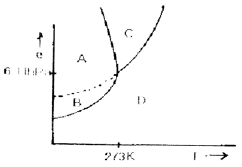
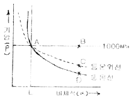
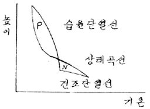
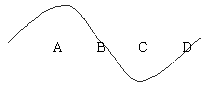
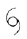

기상기사 (2007-08-05 기출문제)
1과목: 기상관측법
1. 기상위성인 GMS의 주요 기능이 아닌 것은?
- 가시광선 및 적외선 주사 방사
- 기상자료의 수집
- 위성사진의 송신
- 기상 상태의 분석 및 예보
(정답률: 알수없음)

2. 기상 관측요소의 단위로서 옳은 것은?
- 대기압 : dyne/cm2
- 일사량 : cal
- 상대습도 : g/kg
- 강수량 : cm/m2
(정답률: 알수없음)
3. 대기중의 수증기를 나타낸 식 중 틀린 것은? (단, Mv: 수증기의 질량, Ma: 건조공기의 질량, V: 혼합공기의 부피임)
- 비습=Mv/Ma+V
- 혼합비=Mv/Ma
- 수증기농도=Mv/V
- 상대습도=Mv/Ma*100
(정답률: 알수없음)
4. 일상적인 기상업무에서 기온관측에 관련된 내용 중 틀린 것은?
- 온도계가 민감하다고 해서 좋은 것은 아니다.
- 실제 기온은 수초 내에 1-2℃까지 변화할 수 있다.
- 일반적으로 유리대 온도계가 이용된다.
- 수은과 알콜온도계 중 그 선택은 요구되는 반응도에 따른다.
(정답률: 알수없음)
5. 다음 중 대기권의 수직별 온도 분포가 바르게 된 것은?
- 대류권,중간권-상층으로 갈수록 온도가 하강하는 권
- 성층권,열권-상층오로 갈수록 온도가 하강하는 권
- 대류권,열권-상층으로 갈수록 온도가 상승하는 권
- 성층권,중간권-상층으로 갈수록 온도가 상승하는 권
(정답률: 알수없음)
6. 노장의 조건 중 적합하지 않은 것은?
- 그늘이 지지 않는다.
- 건물로부터 건물 높이의 4배 이상 떨어져 있다.
- 높지 않은 언덕 위에 있다.
- 키가 작은 잔디가 깔려 있다.
(정답률: 알수없음)
7. 보통의 기상관측에서는 몇 분전부터 그 시각까지의 평균풍속을 관측하여 풍속으로 하는가?
- 1분
- 3분
- 5분
- 10분
(정답률: 알수없음)
8. 시정관측시 시정이 방향별로 다를 때 취하는 것은?
- 우시정
- 최대시정
- 최소시정
- 평균시정
(정답률: 알수없음)
9. 대기 중 발생하는 일기현상의 관계 중 틀린 것은?
- hydrometeors - 이슬
- lithometeors - 황사
- photometeors - 무지개
- electrometeors - 광환
(정답률: 알수없음)
10. 관측시각으로 진태양시를 사용하는 기상요소는?
- 기온
- 기압
- 바람
- 일사
(정답률: 알수없음)
11. 증발계에 대한 설명이 틀린 것은?
- 대형의 것은 구경이 120㎝나 되는 철제용기로 국제적인 표준으로 되어 있다.
- 소형의 것은 직경 20㎝의 동제용기이며 기상대 등에서 널리 사용된다.
- 소형의 것보다 대형의 것이 바람직하다.
- 증발계는 직사광선을 받지 않도록 설치한다.
(정답률: 알수없음)
12. 보통 사용하고 있는 우량계에서 깔대기 모양인 수수기(受水器: 물을 받아 들이는 곳)의 안쪽 지름은?
- 10㎝
- 20㎝
- 30㎝
- 40㎝
(정답률: 알수없음)
13. 건습구 습도계로 관측된 습도의 오차를 일으키는 원인 중 적합하지 않은 것은?
- 온도계 자체의 오차
- 온도(기온) 변화에 따른 오차
- 통풍 속도 변화에 의한 오차
- 습구에 부착된 천의 두께에 의한 오차
(정답률: 알수없음)
14. 햇무리나 달무리는 어떤 운형의 구름이 있을 때 가장 잘 나타나는가?
- 권운(Ci)
- 권층운(Cs)
- 고적은(Ac)
- 고층운(As)
(정답률: 알수없음)
15. 눈이 내릴 때 나타나는 에코(echo)의 특성이 아닌 것은?
- 눈의 에코는 대체로 비의 경우보다. 강도가 강하다.
- 건조한 눈의 에코일수록 강도가 약하다.
- 주로 층상 에코나 대류성 에코 형태로 나타난다.
- 대류성 눈의 에코는 윤곽이 비교적 뚜렷하다.
(정답률: 알수없음)
16. 정지기상위성의 고도는 대략 몇 ㎞인가?
- 358㎞
- 3580㎞
- 35800㎞
- 358000㎞
(정답률: 알수없음)
17. 하이드로메타(hydrometer)는 무엇을 측정하기 위한 측기인가?
- 기체의 비중
- 액체의 비중
- 고체의 비중
- 수증기의 비중
(정답률: 알수없음)
18. 서리를 설명한 내용 중 옳은 것은?
- 대기 중의 수증기가 응결(condensation)된 것
- 대기 중의 수증기가 승화(sublimation)된 것
- 대기 중의 수증기가 응결된 후 빙결(freezing)된 것
- 대기 중의 수증기가 기화(vaporization)에 의한 것
(정답률: 알수없음)
19. 로테이팅 빔 씨로메타(Rotating beam ceilometers)는 무엇을 측정하는 측기인가?
- 구름의 형태(운형)
- 최저 운저 높이
- 시정
- 대기혼탁도
(정답률: 알수없음)
20. 다음 중 불쾌지수(discomfort index. Di)에 고려되지 않는 기상요소는?
- 건구온도
- 습구온도
- 습도
- 바람
(정답률: 알수없음)
2과목: 대기열역학
21. 건조공기의 성분 중 질량 백분율이 큰 순서대로 나열된 것은?
- 질소 - 산소 - 네온 - 아르곤
- 질소 - 산소 - 오존 - 헬륨
- 질소 - 산소 - 크립톤 - 아르곤
- 질소 - 산소 - 아르곤 - 이산화탄소
(정답률: 알수없음)
22. 포화단열감률이 건조단열감률보다. 작은 이유는?
- 기화열 때문이다.
- 잠열 때문이다.
- 융해열 때문이다.
- 승화열 때문이다.
(정답률: 알수없음)
23. 다음 물에 대한 T-e diagram에서 기체상태를 나타내는 영역은?

- A
- B
- C
- D
(정답률: 알수없음)
24. 건조공기가 수증기를 포함하게 되는 경우 공기의 평균 분자량은 어떻게 변하는가?
- 작아진다.
- 커진다.
- 변화 없다.
- 경우에 따라 다르다.
(정답률: 알수없음)
25. 기압(P)과 비체적(α)을 좌표축으로 취한 건조공기에 대한 열역학선도의 그림에서 단열과정은?

- A - B
- A - C
- A - D
- A - E
(정답률: 알수없음)
26. 다음 중 이상 기체의 상태 방정식을 옳게 나타낸 것은? (단, P는 기압, T는 기온, R은 기체상수, V는 체적, m은 기체의 질량이다.)
- V/P = mR/T
- PV = R/mT
- PV = mRT
- P/V = mRT
(정답률: 알수없음)
27. g를 중력가속도, ρ를 가열된 공기덩이의 밀도, ρo를 주위 대기의 밀도라 할 때 그 공기덩이의 상승 가속도는?
- g(ρo/ρo-ρ)
- g(ρ/ρo-ρ)
- g(ρo-ρ/ρo)
- g(ρo-ρ/ρ)
(정답률: 알수없음)
28. 일반대기에서 기온(T), 노점온도(Td), 습구온도(Tw)의 관계를 맞게 표시한 것은?
- Td≥Tw≥T
- Td≥T≥Tw
- T≥Td≥Tw
- T≥Tw≥Td
(정답률: 알수없음)
29. 다음 중 열역학 선도(thermodynamic diagram)에 포함 되어 있지 않은 선은?
- 등온선
- 건조 단열선
- 등압선
- 상대습도선
(정답률: 알수없음)
30. 그림에서 면적 P와 면적 N을 비교하여 P > N이면?

- 위성 잠재 불안정
- 진성 잠재 불안정
- 안정형
- 절대 안정형
(정답률: 알수없음)
31. 정압비열 Cp, 정적비열 Cv, 비기체상수 R사이의 올바른 관계식은?
- Cp=Cv+R
- Cp=Cv-R
- Cp=-Cv+R
- Cp=-Cv-R
(정답률: 알수없음)
32. 건조단열선은 어떤 물리량이 일정한 선인가?
- 기압
- 기온
- 온위
- 상당온위
(정답률: 알수없음)
33. 다음 선조 중에서 등온선이 곡선으로 나타나는 것은?
- Clapeyron선도
- Tephigram
- Emagram
- Stuve선도
(정답률: 알수없음)
34. 다음 중 건조대기의 불안정을 바르게 설명한 것은?
- 온도가 연직방향으로 증가한다.
- 온도가 연직방향으로 건조단열감율 보다 작게 감소한다.
- 온위가 연직방향으로 증가한다.
- 온위가 연직방향으로 감소한다.
(정답률: 알수없음)
35. 정적으로 안정한 대기에서 부력진동수의 특징이 옳게 설명된 것은?
- 허수로 나타난다.
- 음의 값을 갖는다.
- 양의 값을 갖는다.
- 0 이 된다.
(정답률: 알수없음)
36. 1Pa은 몇 mb인가?
- 10-1mb
- 10-2mb
- 10mb
- 102mb
(정답률: 알수없음)
37. 다음 중 이상기체와 관계없는 것은?
- 내부에너지가 온도만의 함수이다.
- 엔탈피가 온도만의 함수이다.
- 상태방정식을 정확하게 만족한다.
- 엔탈피의 변화량이 정적 비열과 온도 변화량의 곱으로 표현된다.
(정답률: 알수없음)
38. 다음 설명 중 틀린 것은?
- 포화수증기압은 온도가 높을수록 크다.
- 0℃에서 포화수증기압은 약 6.11hPa이다.
- 과냉각물에 대한 포화수증기압은 같은 온도의 얼음에 대한 포화수증기압보다 작다.
- 포화수증기 밀도는 온도가 높을수록 크다.
(정답률: 알수없음)
39. 건조공기의 분자량을 Md, 수증기의 분자량은 Mv라 할 때 Mv/Md의 값은?
- 0.286
- 0.622
- 0.610
- 1.609
(정답률: 알수없음)
40. 화재발생이나. 건물 등의 건습 등의 척도로서 상대습도보다는 이것을 사용하는 것이 합리적이다. 다음 중 이것은 무엇인가?
- 절대습도
- 실효습도
- 비습
- 혼합비
(정답률: 알수없음)
3과목: 대기운동학
41. 유한영역 내에서 순환과 소용돌이도를 관계짓는 정리는?
- stokes의 정리
- gauss의 발산 정리
- fermat의 정리
- bernoulli의 방정식
(정답률: 알수없음)
42. 경압대기의 성질에 속하지 않는 것은?
- 등압면과 등온면이 교차한다.
- 발산이 존재한다.
- 등압면과 등온면이 평행한다.
- 지균풍이 높이에 따라 변화한다.
(정답률: 알수없음)
43. 마찰이 없을 때 절대소용돌이도는 보존된다. 이 경우 북상 하는 공기덩이의 상대소용돌이도는?
- 일정하다.
- 감소한다.
- 증가한다.
- 증가와 감소를 되풀이한다.
(정답률: 알수없음)
44. 중위도 지방의 편서풍이 지속되는 이유는 각운동량과 관계 된다. 다음 중 옳은 것은?
- 각운동량이 중위도에서 극지방으로 수송된다.
- 각운동량이 중위도에서 적도지방으로 수송된다.
- 각운동량이 적도지방에서 중위도로 수송된다.
- 각운동량이 중위도에서 상층으로 수송된다.
(정답률: 알수없음)
45. 850hPa 이하의 고도에서 저기압쪽으로 바람이 불어 들어가는 이유로 가장 가까운 것은?
- 코리올리인자
- 지구자전
- 지표면의 마찰
- 공기밀도의 차
(정답률: 알수없음)
46. 지오포텐셜 고도가 수평거리 1000㎞에 걸쳐 100m증가 하였다. 지균풍속(㎧)은? (단. f=10-4s-1)
- 약 10
- 약 12
- 약 14
- 약 16
(정답률: 알수없음)
47. 다음 중 일반적인 경우 혼합층의 높이가 제일 높을 수 있는 때는?
- 일출 직전
- 일출 직후
- 정오 직후
- 야간
(정답률: 알수없음)
48. 3개의 세포로 구성된 대기 대순환의 경우, 지상 저기압은 어디에 있어야 하는가?
- 적도와 극
- 30도와 극
- 적도와 30도
- 적도와 60도
(정답률: 알수없음)
49. 연직운동방정식의 다음 항 중에서 종관규모 운동의 경우에 가장 작은 것은?
- 가속도항
- 지구곡률항
- 기압경도력항
- 중력항
(정답률: 알수없음)
50. 지상 근처의 바람을 바르게 설명한 것은?
- 지균풍에 가깝다.
- 등압선을 횡단하여 분다.
- 상층 바람보다 강하다.
- 지상 100m 고도에서는 마찰의 영향이 거의 없다.
(정답률: 알수없음)
51. 지름이 100km인 순압소용돌이 (barotropuc vortex)가 각속도 ω로 강체회전을 하고 있다. 이 소용돌이가 크기를 그대로 유지한 채로 북위 30도에서 북극으로 이동한다면 이 공기덩이의 각속도는?
- ω-Ω
- ω-Ω/2
- Ω-ω
- Ω/2-ω
(정답률: 알수없음)
52. 와도와 와도 이류에 대한 설명 중 옳은 것은?
- 북풍계열의 바람이 있는 곳에서는 양의 지구와도 이류가 발생한다.
- 북풍계열의 바람이 있는 곳에서는 음의 지구와도 이류가 발생한다.
- 남풍계열의 바람이 있는 곳에서는 음의 지구와도 이류가 발생한다.
- 남풍계열의 바람이 있는 곳에서는 상대와도는 보존된다.
(정답률: 알수없음)
53. 다음 중 종관규모의 스케일이 아닌 것은?
- U(수평속도) ~ 10m/s
- L(수평길이) ~ 1000km
- H(연직길이) ~ 10km
- W(연직속도) ~ 10-1m/s
(정답률: 알수없음)
54. 북반구 500hPa의 등고선을 따른 흐름을 나타낸 다음 그림 중 상대소용도이도의 NVA(Negative Vorticity Advection)가 나타나는 지점은?(오류 신고가 접수된 문제입니다. 반드시 정답과 해설을 확인하시기 바랍니다.)

- A
- B
- C
- D
(정답률: 알수없음)
55. 다음의 기상변수 중 계산시 가장 큰 비율의 오차를 보이는 것은?
- 발산
- 와도
- 변형
- 온도이류
(정답률: 알수없음)
56. 다음 중 ∇T의 성질이 아닌 것은? (단, T는 온도를 말함.)
- 등온선에 완전히 직각이다.
- 등온선이 밀집해 있는 곳에서 값이 크다.
- 온도가 증가하는 방향으로 향한다.
- ∇T와 바람의 방향이 같은 방향일 때 온도이류가 발생한다.
(정답률: 알수없음)
57. 적운 군집의 대표적인 크기는 얼마인가?
- 1km
- 10km
- 100km
- 1000km
(정답률: 알수없음)
58. 부력 진도수가 0.012/s인 경우 주기는 약 얼마인가?
- 1분
- 4분
- 9분
- 15분
(정답률: 알수없음)
59. 맴돌이 유효위치에너지가 맴돌이 운동에너지로 전환되는 경우는?
- 동일한 위도대에서 더운 공기 상승, 찬 공기 하강
- 동일한 위도대에서 더운 공기 하강, 찬 공기 상승
- 동일한 위도대에서 더운 영역에서의 가열, 찬 영역에서의 냉각
- 동일한 위도대에서 더운 영역에서의 냉각, 찬 영역에서의 가열
(정답률: 알수없음)
60. 지구의 자전축에서 바깥쪽으로 향하는 겉보기힘 즉 원심력은 Ω2Rcos ø 이다. 다음 중 적합하지 않은 것은? (단, Ω는 지구의 각속도, R은 지구의 반지름이다.)
- 극에서는 0이다.
- 적도에서는 Ω2R로 표시된다.
- 적도에서는 지구인력의 3%이다.
- 이힘의 결과로 지구 적도 반경이 극반경보다 크다.
(정답률: 알수없음)
4과목: 기후학
61. Kő ppen의 기후 분류에서 온대기후인 것은?
- 초원 기후
- 사막 기후
- 지중해성 기후
- 툰드라 기후
(정답률: 알수없음)
62. 도시기후의 일반적인 특성이 아닌 것은?
- 입사되는 일사량이 교외지역에 비하여 적다.
- 도시의 기온이 교외의 기온보다. 높다.
- 도시의 상대습도가 교외보다 높다.
- 도시의 강수량이 교외에 비하여 많다.
(정답률: 알수없음)
63. 푀엔(Fő hn)과 보라(Bora)에 대한 설명 중 올바른 것은?
- 보라는 겨울을 중심으로 가을에서 봄에 걸쳐 현저하며 푀엔은 여름을 중심으로 봄∙가을에 현저하다.
- 풍하측(Lee side)에서는 모두 습도는 높아지나, 기온은 푀엔은 높아지고 보라는 낮아진다.
- 푀엔은 기온이 내려감으로 체감은 상쾌하나 보라는 기온이 급상승하여 나른하고 두통이 온다.
- 보라와 푀엔은 모두 농작물에 이익을 주는 바람이다.
(정답률: 알수없음)
64. 열대성 저기압 발생의 특성에 대한 설명 중 틀린 것은?
- 위도 0 ~ 5℃ 에서 발생
- 해상에서 발생
- 대체로 해수면 온도 27℃이상의 조건에서 발생
- 발생하면서 서쪽으로 이동
(정답률: 알수없음)
65. 지구상에서 연평균 지표기온이 가장 높은 위도대는?
- 0˚
- 10˚ N
- 10˚
- 23.5˚ N
(정답률: 알수없음)
66. 우리나라의 평균 기온(남한 기준)의 계절 변화의 폭은 다음 중 어디에 속하는가?
- 0~15℃
- -1~26℃
- 10~26℃
- 20~30℃
(정답률: 알수없음)
67. 기후인자라고 볼 수 없는 것은?
- 위도
- 해류
- 지형
- 일사
(정답률: 알수없음)
68. 쾨펜의 기후구분에서 첫째, 둘째, 셋째 번 기호(예를 들어 Cwb 등)는 각각 어느 요소에 의해 정해지는가?
- 기온 - 강수량 - 기온
- 기온 - 강수량 - 기압
- 기온 - 기온 - 강수량
- 기온 - 기온 - 습도
(정답률: 알수없음)
69. 대기운동의 공간 규모를 소규모, 중규모, 대규모와 지구규모로 나눌 때 중규모에 속하지 않는 현상은?
- 뇌우
- 해륙풍
- 토네이도
- 계절풍
(정답률: 알수없음)
70. 강수효율(precipitation effactiveness ratio)에 대한 다음 설명 중 맞는 것은?
- 월 강수량을 월 증발량으로 나눈 비이다.
- 연 강수량에 대한 여름 강수량의 비이다.
- 월 강수량을 월 상대습도로 나눈 비이다.
- 월 강수량을 연 강수량으로 나눈 비이다.
(정답률: 알수없음)
71. 물수지(water balance)계산은 토양수분 저유량을 얼마로 하느냐에 따라 달라진다. 우리나라의 토양수분 저유량은?
- 100mm
- 200mm
- 300mm
- 400mm
(정답률: 알수없음)
72. 다음 중 전지구적인 기온의 하강에 기여하는 요인은?
- 냉매제의 사용증가
- 화석연료의 사용 증가
- 에어로졸의 방출 증가
- 산림의 벌채
(정답률: 알수없음)
73. 대기중의 열수송 형태 중 기후현상에 기여하는 정도가 가장 적은 것은?
- 이류(advection)
- 복사(radiation)
- 잠열수송(latent heat transfer)
- 전도(conduction)
(정답률: 알수없음)
74. 다음 중 일반적인 기후(climate)의 정의와 관계가 먼 것은?
- 일기의 종합
- 일기의 평균
- 정상적인 일기
- 일기의 범위
(정답률: 알수없음)
75. 다음 중 해풍이 가장 잘 발달하는 지역은?
- 극지방
- 고위도 지방
- 중위도 지방
- 열대지방
(정답률: 알수없음)
76. 기후변동의 원인이 될 수 있는 요인 중 서로 성격이 다른 하나는?
- 조산운동
- 극의 이동
- 지판이동
- 화산폭발
(정답률: 알수없음)
77. 도시에서 스모그(smog)현상이 일어나기 쉬운 기상 조건은?
- 역전층이 존재할 때
- 대기가 불안정할 때
- 날씨가 흐릴 때
- 대기확산이 활발할 때
(정답률: 알수없음)
78. 기후의 일변화에 대한 설명 중 가장 거리가 먼 것은?
- 기온의 일변화는 흐린 날보다 맑은 날에 크다.
- 최고기온은 오후 1~3시 사이에 발생한다.
- 기온의 일변화는 해안지방보다 내륙에서 크다.
- 최저기온은 한밤중에 발생한다.
(정답률: 알수없음)
79. 쾨펜의 기후 분류에서 기호 B의 의미는?
- 열대 다우 기후
- 건조 기후
- 온대 다우 기후
- 한대 기후
(정답률: 알수없음)
80. 다음 오호츠크해 기단에 대한 설명 중 가장 거리가 먼 것은?
- 북태평양이 발원지이다.
- 한랭 다습하다.
- 동계에 불안정, 하계에 안정하다.
- 장마전선과 관련이 있다.
(정답률: 알수없음)
5과목: 일기분석 및 예보론
81. 국제기상전문의 통보에 있어 현재 일기 10의 시정의 제한거리는?
- 100m 이상
- 500m 이상
- 1000m 이상
- 2000m 이상
(정답률: 알수없음)
82. 지상일기도에서 기압경도력은 등압선의 어떠한 방향으로 작용 하는가?
- 평행한 방향으로
- 직각 수평 방향으로
- 연직 상부 방향으로
- 45°의 각도를 이루는 방향으로
(정답률: 알수없음)
83. 중위도 지방의 종관규모 기압계에서 일반적으로 지균풍속과 경도풍속의 차이는 어느 정도를 초과하지 않는가?
- 0 ~ 5%
- 5 ~ 10%
- 10 ~20%
- 20 ~ 30%
(정답률: 알수없음)
84. 1000 ~ 500hpa 층후층의 특징이 아닌 것은?
- 700hpa의 온도분포와 비슷하다.
- 지상전선의 한기쪽에 등층후선이 조밀하다.
- 대기 하층의 기온 분포와 관계없다.
- 층후선이 조밀한 곳에 강풍대가 위치한다.
(정답률: 알수없음)
85. 기층이 대류안정일 때 성립하는 식은? (단, θsw는 위습구 온위)
- dθsw/dz > 0
- dθsw/dz < 0
- dθsw/dz = 0
- dz/dθsw = 0
(정답률: 알수없음)
86. 지상일기도를 만들 때 사용되는 지상일기도 자료 중 가장 대표적인 자료는?
- 기압
- 기온
- 바람
- 노점온도
(정답률: 알수없음)
87. 공기덩이(air pacel)는 형태 및 부피의 변화없이, 그리고 회전운동을 하지 않고 이동할 수 있는데 이런 운동을 무엇이라 하는가?
- 전이운동(transition)
- 회전운동(rotation)
- 변형운동(deformation)
- 발산운동(divergence)
(정답률: 알수없음)
88. 관천망기에 의한 일기예상으로 가장 적합한 것은?
- 저녁 무지개는 흐릴 징조
- 아침 무지개는 맑을 징조
- 바람이 불어가는 쪽의 무지개는 악천의 징조
- 바람이 불어오는 쪽의 무지개는 악천의 징조
(정답률: 알수없음)
89. jet-stream 이 잘 나타나는 일기도는?
- 700 ~ 850hpa의 일기도
- 500 ~ 700hpa의 일기도
- 400 ~ 500hpa의 일기도
- 200 ~ 300hpa의 일기도
(정답률: 알수없음)
90. 침강운동과 무관한 것은?
- 구름의 소산
- 기온의 상승
- 상층의 역전
- 공기의 포화
(정답률: 알수없음)
91. 평평한 육상에서 지상풍과 등압선의 교각(交角)은?
- 0도
- 25 ~ 35도
- 45 ~ 55도
- 90도
(정답률: 알수없음)
92. 온난전선에 관한 설명 중 틀린 것은?
- 전선이 통과한 후 기온이 급 하강한다.
- 지속적인 강수가 적다.
- 강수입자가 비교적 고르다.
- 강수역이 넓다.
(정답률: 알수없음)
93. 열대성 저기압의 중심최대풍속이 55KTS였다. 일기도상에 어떻게 표시하는가?
- T.D
- T.S

(정답률: 알수없음)
94. 쇼월터 안정지수(showalter stability index)는 다음 중 어느것을 이용하면 가장 쉽게 구할 수 있는가?
- 지상일기도
- 고층일기도
- 층후선도
- 대기선도
(정답률: 알수없음)
95. 다음 현상 중 야간에 잘 발생하는 기상 현상으로 볼 수 없는 것은?
- 육풍
- 복사안개
- 골풍
- 서리
(정답률: 알수없음)
96. 로스비(Rossby)파의 특성으로서 적합하지 않는 것은?
- 비발산류이다.
- 마찰 영향이 없다.
- 절대소용돌이도는 보존된다.
- 항상 일정한 속도로 이동한다.
(정답률: 알수없음)
97. 전선에 관한 설명 중 틀린 것은?
- 한랭전선에서는 소낙성 비가 내리는 것이 보통이며, 뇌우와 우박을 동반하기도 한다.
- 온난전선에서 난기단의 역할을 열대기단이 하게 되면 호우가 내리기도 한다.
- 한랭전선은 온난전선에 비해 이동속도가 빠르기 때문에 일기의 회복이 빠르다.
- 전선이 폐색되면 구름은 상층으로부터 소산되어 주로 하층운이 관측된다.
(정답률: 알수없음)
98. 제트기류에 대한 설명 중 틀린 것은?
- 대류권과 성층권의 경계 부근에 위치하며, 출현고도의 높이는 여름철에 높고 겨울철에 낮다.
- 제트기류는 대기의 습도 차이로 발생하며 사행한다.
- 북위 30도 부근 고도 약 12km에 나타나는 아열대 제트기류(subtropical jet)와 북위 40도 부근 고도 약 9km에 나타나는 한대 제트기류(polar jet)가 있다.
- 제트코어의 북쪽에서는 저기압성 회전, 남쪽에서는 고기압성 순환이 일어난다
(정답률: 알수없음)
99. 평지에서 기온이 15℃일 때 주위에 높이 1000m인 산이 있다면 정상에서의 기온은 대략 얼마로 예상되는가?
- 8.5℃
- 7.5℃
- 6.5℃
- 5.5℃
(정답률: 알수없음)
100. 현재일기를 일기도에 기입할 때 사용되는 기호로 틀린 것은?
- 눈 : *
- 비 : •
- 소나기 :

- 황사 : ∞
(정답률: 알수없음)